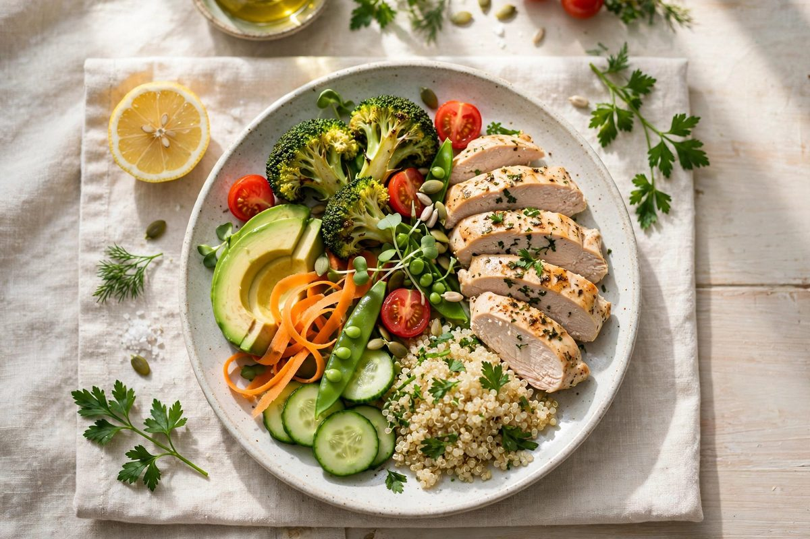

Sustainable Weight Loss — Losing Weight and Keeping It Off
What research says about keeping weight off: habits, monitoring, support, and the long view.
Losing is easier than keeping
Losing weight is hard, but keeping it off is harder. Studies show that most people who lose weight regain some of it within a few years, and a significant number regain it all. This is not a personal failure; it is biology and environment. Your body defends its previous weight by raising hunger and lowering calorie burn, and the modern food environment makes overeating easy. Understanding this helps you plan for maintenance from the start, rather than treating it as an afterthought.
What successful maintainers do
Research on people who have kept weight off for years shows consistent habits. They weigh themselves regularly, often weekly. They eat breakfast most days. They stay physically active, often walking an hour a day or the equivalent. They eat a consistent pattern, with limited variety in the foods they eat most often, and they watch portion sizes. They also monitor themselves and act quickly when weight creeps up by a kilogram or two, rather than waiting until it is five. These habits are ordinary, not extreme, and they are learnable.
Keep the habits, not the diet
The habits that lose weight are mostly the same habits that keep it off: regular meals, plenty of vegetables and protein, daily walking, strength training, enough sleep, and limited sugary drinks and alcohol. The difference in maintenance is that you eat a little more, at maintenance calories rather than in a deficit. People who return to old habits after reaching their goal regain the weight, because the old habits caused the weight in the first place. Think of weight loss as practice for maintenance, not as a temporary project.
Monitoring without obsession
Regular self-monitoring is the strongest predictor of keeping weight off. Weigh yourself weekly, keep an eye on your waist, and notice how your clothes fit. If your weight rises by two kilograms, return to tracking your food for a week and add a little activity. Catching a small gain early is easy; catching a large one is hard. But monitoring should help you, not control you. If it becomes anxious or obsessive, ease off and focus on habits rather than numbers, and talk to a professional if needed.
Planning for difficult times
Holidays, stress, illness, and busy periods are when weight regain happens. Plan for them: keep walking even on holiday, keep a few healthy staples at home, and have a simple plan for busy days, such as a pre-made meal or a short walk. If you overeat at an event, return to normal at the next meal rather than abandoning the plan. A slip is a single event; giving up turns it into a relapse. People who keep weight off are not people who never slip; they are people who recover quickly.
Support and identity
Support helps: a partner, a friend, a group, or a professional who knows your goal and encourages you. Telling someone your goal makes it more real. Over time, the changes become part of who you are: you become a person who walks daily, cooks at home, and eats vegetables, rather than a person on a diet. That identity shift is the deepest form of sustainability. Be patient with yourself, celebrate the habits rather than only the scale, and remember that maintenance is a lifelong practice, not a finish line.
Frequently Asked Questions
Why do most people regain lost weight?
The body defends its previous weight by raising hunger and lowering burn, and the food environment makes overeating easy. Keeping weight off needs the same habits as losing it, continued long term.
How do I keep weight off after reaching my goal?
Eat at maintenance calories, keep walking and strength training, weigh yourself weekly, and act quickly on small gains of one or two kilograms.
How much exercise do people who keep weight off do?
Successful maintainers are usually active daily, often walking an hour a day or the equivalent, plus strength training. Daily movement matters more than intense workouts.